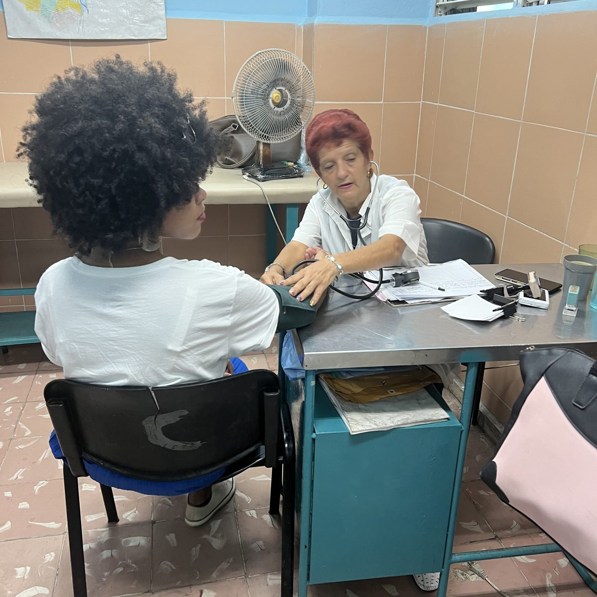
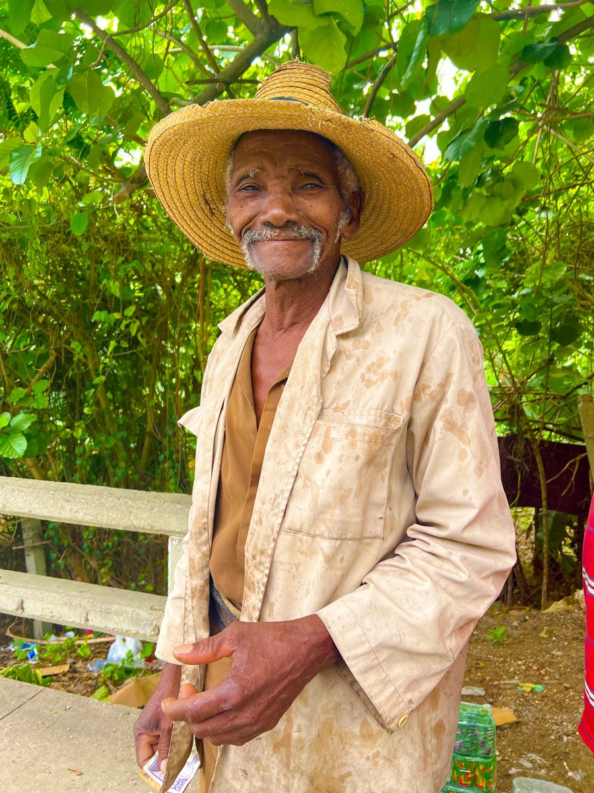

Faça a diferença hoje
Sua doação leva suprimentos médicos, capacitação e ferramentas de diagnóstico às clínicas que precisam deles, e cada entrega é documentada, do nosso armazém até o profissional de saúde que a recebe.
Escolha o destino da sua doação:
Doe agora com PayPalOrganização sem fins lucrativos registrada 501(c)(3) · EIN 33-2193485 · Doações dedutíveis de impostos (nos EUA)

O que o seu apoio tornou possível
- 93.7%dos gastos em dinheiro vão diretamente para suprimentos médicos
- $3.94Mem suprimentos médicos doados entregues a Cuba em 2025 e 2026
- 43,377unidades de suprimentos em nossa entrega de agosto de 2026
- 88apoiadores doaram $9,556 para nossa Campanha de Saúde Materna 2026
Com base nos registros de envios e financeiros da PAMA, atualizados em outubro de 2026. Veja as finanças completas
O que sua doação torna possível
Entregar ajuda que salva vidas
Sua doação ajuda nossa equipe de logística a levar suprimentos essenciais a clínicas que enfrentam escassez.
Apoiar a equidade em saúde
Ajude-nos a reduzir as desigualdades em saúde nas Américas. A equidade começa pelo acesso.
Fortalecer profissionais de saúde locais
Capacitação, equipamentos de diagnóstico e prontuários digitais ajudam os profissionais de saúde locais a ampliar o cuidado que oferecem.
Viabilizar o próximo envio
Doações em dinheiro compram os suprimentos específicos que as clínicas pedem, para que cada envio atenda a necessidades clínicas reais.
Infraestrutura ética
De prontuários eletrônicos a ultrassom, entregamos com dignidade. Cada envio é avaliado e tem o recebimento assinado na chegada.
Faça parte de um movimento de cuidado
Isto não é caridade, é solidariedade. Faça parte da mudança.
Outras formas de doar
Seja membro
Os membros sustentam a coalizão o ano todo. Contribuição por mês (ou por ano): médicos $25 ($300); residentes, PAs, NPs e RNs $20 ($240); apoiadores em geral $15 ($180); estudantes de medicina $5 ($60).
Escolha sua associaçãoDoe suprimentos médicos
Hospitais, clínicas, fornecedores e campanhas comunitárias podem doar suprimentos médicos não utilizados. Envie um e-mail para info@pan-american.org com a lista de itens, quantidades e datas de validade, e confirmaremos o que as clínicas precisam. Cada entrega é assinada e fotografada.
Envie um cheque pelo correio
Emita cheques nominais à Pan-American Medical Association e envie para:
600 1st Ave Ste 102 PMB 2470
Seattle, WA 98104
Fundos aconselhados por doadores e contrapartida do empregador
Recomende uma doação do seu fundo aconselhado por doadores (donor-advised fund) ou pergunte ao seu empregador se ele faz doações de contrapartida. Você precisará do nosso nome legal, Pan-American Medical Association, e do EIN 33-2193485.
Doe seu tempo como voluntário
Ajude a separar e embalar envios, ou contribua com habilidades clínicas, de pesquisa, de logística ou de comunicação.
Seja voluntárioSeja nosso parceiro
Sociedades médicas, fornecedores, fundações e instituições podem participar da coalizão por meio de doações de suprimentos, programas ou patrocínio.
Inicie uma conversaVozes do campo
“Agradecemos sinceramente as suturas que vocês nos enviaram em agosto. Precisamos delas com urgência, pois não podemos realizar cirurgias sem elas.”

“Obrigado por entrar em nossa comunidade — não como visitantes, mas como parceiros na cura. A presença de vocês trouxe mais do que remédios; trouxe dignidade, esperança e a lembrança de que nossas vidas importam. Meu povo se sentiu visto. Nós nos sentimos ouvidos. E, graças a vocês, agora nos sentimos mais fortes. Que este seja o começo de um vínculo duradouro, enraizado na solidariedade e no amor.”
“Obrigado por entregar o sistema de ultrassom em Aldea Pitzal. Este presente é mais do que uma máquina — é uma tábua de salvação. Com ele, posso cuidar de mães, acompanhar doenças crônicas e oferecer esperança onde não havia nenhuma. Vocês não apenas enviaram um equipamento — ajudaram a construir confiança, dignidade e um futuro mais forte para minha comunidade. Somos profundamente gratos.”
“Não apenas prestamos cuidado, mobilizamos equipes. Cada profissional de saúde, cada protocolo, cada parceria é um tijolo na base de um continente mais justo. Se você acredita na saúde como direito humano, na transparência e na humanidade, este é o seu momento. Vamos construir do jeito certo.”
Perguntas frequentes
Minha doação é dedutível de impostos?
Sim. A Pan-American Medical Association é uma entidade beneficente pública 501(c)(3) reconhecida pelo IRS, com vigência a partir de 10 de dezembro de 2024 (EIN 33-2193485). As contribuições são dedutíveis de impostos (nos EUA), conforme permitido por lei. Consulte seu assessor tributário sobre a sua situação.
Vou receber um recibo?
O PayPal envia um recibo por e-mail assim que sua doação é processada. Para cheques e doações de suprimentos, enviamos uma confirmação por escrito para seus registros.
Como as doações são usadas?
Dos gastos em dinheiro da PAMA, 93.7% foram diretamente para suprimentos médicos. Os suprimentos doados são acompanhados por área clínica, e cada envio é avaliado com o nosso Solidarity Supply Index. Veja nossa página de transparência financeira para o detalhamento completo.
O que a PAMA faz?
A PAMA entrega ajuda médica ética, capacita profissionais de saúde comprometidos com a equidade e constrói infraestrutura em comunidades carentes de atendimento nas Américas e no Caribe.
Onde a PAMA atua?
Trabalhamos com profissionais de saúde e parceiros em Cuba, na Guatemala e em comunidades carentes de atendimento nos EUA, incluindo a Filadélfia, levando cuidado onde ele é mais necessário.
Posso ser voluntário ou colaborar?
Sim! Recebemos com alegria profissionais de saúde, especialistas em logística, comunicadores e construtores de coalizões. Entre em contato para descobrir como suas habilidades podem apoiar nossa missão.